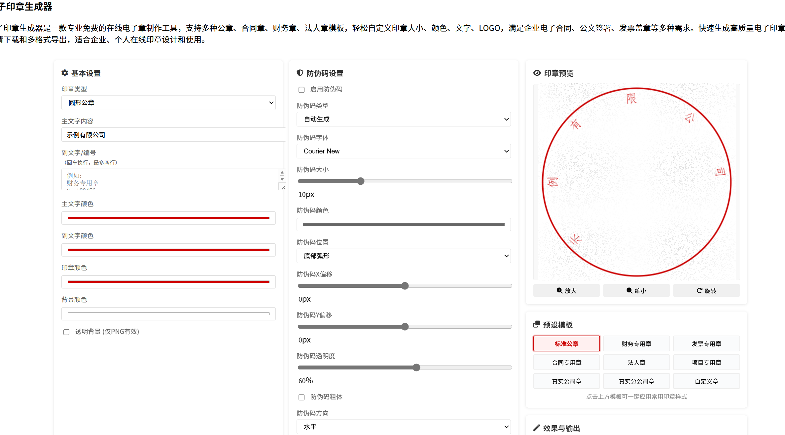

2025年10月25日
Rooteater维护/站务版
- 20251128: Rooteater添加蓝奏云直链解析 加入几篇文章
- 20251025: Rooteater添加印章生成器，进行一定的结构调整 
- 20250927: Rooteater添加Articals页面和基本的博文模版(正是此页)
- 20250926:对目录结构进行了整理
以下为语法测试
哈哈哈哈哈
"Lucas is FEN", ainsi dit Edith.
对比
对比
对比
- a:英语中的第一个字母